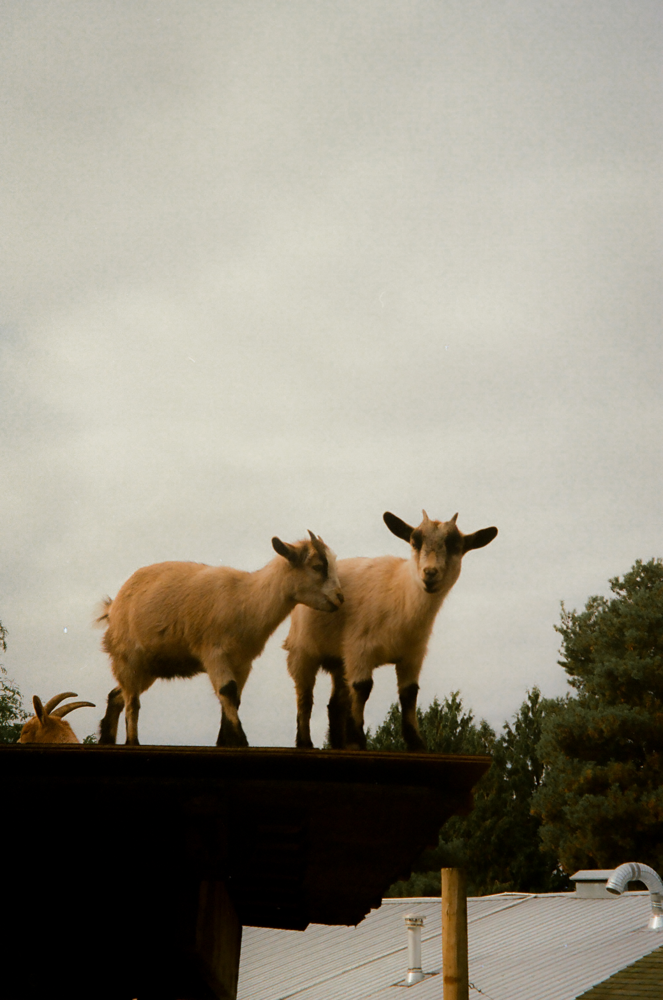
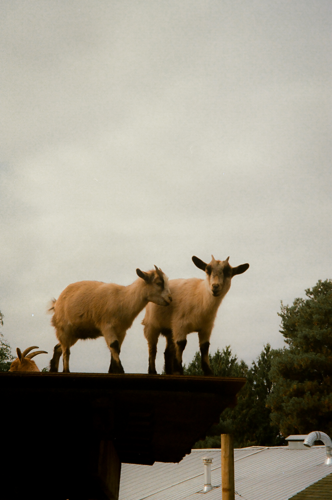

Personal Photography
- Documentation and creativity
Photography is an important practice for me. I find an emotional attachment with the camera I choose to bring along with me for trips or for certain eras of my life. I am always taking pictures and documenting the things I see. My favourite subject besides my friends are animals and landscapes. They remind me of the different regions that this earth has to offer. It is a creative delight to edit all of my photos in Adobe Lightroom. I enjoy trying new recipes and experimenting with colours and techniques.
NEWFOUNDLAND AND LABRADOR, 2025 - CANON EOS 6D


 MISC. FAVOURITES ‘ANIMALS ON FILM’ - PENTAX ESPIO 115 ON FUJIFILM 400MISC. FAVOURITES FROM LONDON, ENGLAND - ‘LE BOX’ AFGA SINGLE USE DISPOSABLE CAMERA
MISC. FAVOURITES ‘ANIMALS ON FILM’ - PENTAX ESPIO 115 ON FUJIFILM 400MISC. FAVOURITES FROM LONDON, ENGLAND - ‘LE BOX’ AFGA SINGLE USE DISPOSABLE CAMERA

 ROADTRIP TO NELSON - CANON EOS 6D
ROADTRIP TO NELSON - CANON EOS 6D